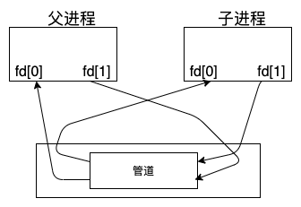
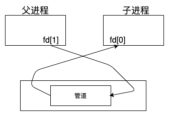

Android中管道的使用
Contents
前言
最近读了一些 Android 源码，发现其中不少是用 pipe 机制来实现的，并且和我们往常使用 pipe 有些不一样。
有必要学习一下 pipe 的使用，不然会影响阅读源码，并且 Android 里的使用方式比较有技巧。
Pipe 管道通信
先来看一个 Linux 手册中的例子，你可以通过 man 2 pipe 来查看，内容如下
#include <sys/types.h>
#include <sys/wait.h>
#include <stdio.h>
#include <stdlib.h>
#include <unistd.h>
#include <string.h>
int
main(int argc, char *argv[])
{
int pipefd[2]; // 定义两个描述符，用于接收 pipe 创建的读写描述符
pid_t cpid;
char buf;
if (argc != 2) {
fprintf(stderr, "Usage: %s <string>\n", argv[0]);
exit(EXIT_FAILURE);
}
if (pipe(pipefd) == -1) { // 创建描述符，保存到 pipefd 中
perror("pipe");
exit(EXIT_FAILURE);
}
cpid = fork(); // 创建子进程
if (cpid == -1) {
perror("fork");
exit(EXIT_FAILURE);
}
if (cpid == 0) {
close(pipefd[1]); // 关掉子进程中的写描述符 /* Close unused write end */
while (read(pipefd[0], &buf, 1) > 0) // 从管道中读取数据，直到没有内容
write(STDOUT_FILENO, &buf, 1);
write(STDOUT_FILENO, "\n", 1);
close(pipefd[0]);
_exit(EXIT_SUCCESS);
} else {
close(pipefd[0]); // 关掉父进程中的读描述符
write(pipefd[1], argv[1], strlen(argv[1])); // 往写描述符中写入 argv[1]
close(pipefd[1]); // 关闭写描述符
wait(NULL); /* Wait for child */
exit(EXIT_SUCCESS);
}
}
管道有以下两种局限性
- 管道只能在具有公共祖先的两个进程之间使用。通常配合
fork一起使用 - 管道是半双工的（数据只能在一个方向上流动）。当然有些系统提供全双工的管道。
当我们调用 fork 的时候，描述符如下所示

fork 之后我们可以决定数据的流向，是从父进程流向子进程还是从子进程流向父进程。上面的例子关闭了父进程的读描述符和子进程的写描述符，所以数据从父进程流向子进程，如下图所示。

在《UNIX环境高级编程》一书中提到，单个进程中的管道几乎没有任何用处。然而最近读Android源码发现许多地方用到的就是单个进程的管道。
接下来，我们从Android源码中看看管道是怎么在单个进程中使用的。
Android 中是怎么使用管道的?
源码基于 Android5.1 ，因为之后的版本改成了 eventfd ，而不再是 pipe 。
/system/core/libutils/Looper.cpp
Looper::Looper(bool allowNonCallbacks) :
mAllowNonCallbacks(allowNonCallbacks), mSendingMessage(false),
mResponseIndex(0), mNextMessageUptime(LLONG_MAX) {
int wakeFds[2];
int result = pipe(wakeFds); // 创建管道
LOG_ALWAYS_FATAL_IF(result != 0, "Could not create wake pipe. errno=%d", errno);
mWakeReadPipeFd = wakeFds[0];
mWakeWritePipeFd = wakeFds[1];
result = fcntl(mWakeReadPipeFd, F_SETFL, O_NONBLOCK);
LOG_ALWAYS_FATAL_IF(result != 0, "Could not make wake read pipe non-blocking. errno=%d",
errno);
result = fcntl(mWakeWritePipeFd, F_SETFL, O_NONBLOCK);
LOG_ALWAYS_FATAL_IF(result != 0, "Could not make wake write pipe non-blocking. errno=%d",
errno);
mIdling = false;
// Allocate the epoll instance and register the wake pipe.
mEpollFd = epoll_create(EPOLL_SIZE_HINT); // 创建 epoll 描述符
LOG_ALWAYS_FATAL_IF(mEpollFd < 0, "Could not create epoll instance. errno=%d", errno);
struct epoll_event eventItem;
memset(& eventItem, 0, sizeof(epoll_event)); // zero out unused members of data field union
eventItem.events = EPOLLIN;
eventItem.data.fd = mWakeReadPipeFd;
result = epoll_ctl(mEpollFd, EPOLL_CTL_ADD, mWakeReadPipeFd, & eventItem); // 监听读管道中的事件
LOG_ALWAYS_FATAL_IF(result != 0, "Could not add wake read pipe to epoll instance. errno=%d",
errno);
}
在 Native 层的 Looper 的构造方法中，会创建一个管道，这里和平时使用管道有点不一样，这里的管道并没有进行关闭操作。
因为这里没有进行 fork 所以不会存在两个一模一样的管道， fork 出来的子进程和父进程是一模一样的。在 Looper 中如果你调用 close 关闭了其中一个，那么数据就无法流通了。
然后使用 epoll_create 创建了一个用于监听其它描述符的描述符，接着使用 epoll_ctl 把管道的读描述符加入到 epoll 中进行监听，这样在向管道中写入数据的时候就可以通过 epoll_wait 监听到了。
什么时候往管道中写入数据
在往 MessageQueue 中插入消息的时候会调用 wake 方法，这里就会向管道中的写描述符写入 W ，如果失败了会一直尝试，直到成功为止。
void Looper::wake() {
ssize_t nWrite;
do {
nWrite = write(mWakeWritePipeFd, "W", 1); // 往写描述符中写入 W
} while (nWrite == -1 && errno == EINTR);
if (nWrite != 1) {
if (errno != EAGAIN) {
ALOGW("Could not write wake signal, errno=%d", errno);
}
}
}
什么时候从管道中读取数据
在 Looper 中的 loop 有一个死循环，会一直调用 queue.next ，在 next 中会调用 epoll_wait 去检测是否管道中有事件发生，如过有事件发生则会调用 awoken ， awoken 则向管道中的读描述符读取数据，直到没有内容。管道中的数据读取完了就会开始处理消息，分发给对应的 Handler 。
int Looper::pollInner(int timeoutMillis) {
//...
int result = POLL_WAKE;
mResponses.clear();
mResponseIndex = 0;
mIdling = true;
struct epoll_event eventItems[EPOLL_MAX_EVENTS];
// 检测监听的描述符中是否有事件
int eventCount = epoll_wait(mEpollFd, eventItems, EPOLL_MAX_EVENTS, timeoutMillis);
mIdling = false;
mLock.lock();
// ...
for (int i = 0; i < eventCount; i++) {
int fd = eventItems[i].data.fd;
uint32_t epollEvents = eventItems[i].events;
if (fd == mWakeReadPipeFd) { // 判断是否是读管道描述符
if (epollEvents & EPOLLIN) {
awoken(); // 读取管道中所有的数据
} else {
ALOGW("Ignoring unexpected epoll events 0x%x on wake read pipe.", epollEvents);
}
} else {
ssize_t requestIndex = mRequests.indexOfKey(fd);
if (requestIndex >= 0) {
int events = 0;
if (epollEvents & EPOLLIN) events |= EVENT_INPUT;
if (epollEvents & EPOLLOUT) events |= EVENT_OUTPUT;
if (epollEvents & EPOLLERR) events |= EVENT_ERROR;
if (epollEvents & EPOLLHUP) events |= EVENT_HANGUP;
pushResponse(events, mRequests.valueAt(requestIndex));
} else {
ALOGW("Ignoring unexpected epoll events 0x%x on fd %d that is "
"no longer registered.", epollEvents, fd);
}
}
}
Done: ;
mNextMessageUptime = LLONG_MAX;
while (mMessageEnvelopes.size() != 0) {
nsecs_t now = systemTime(SYSTEM_TIME_MONOTONIC);
const MessageEnvelope& messageEnvelope = mMessageEnvelopes.itemAt(0);
if (messageEnvelope.uptime <= now) {
{ // obtain handler
sp<MessageHandler> handler = messageEnvelope.handler;
Message message = messageEnvelope.message;
mMessageEnvelopes.removeAt(0);
mSendingMessage = true;
mLock.unlock();
handler->handleMessage(message);
} // release handler
mLock.lock();
mSendingMessage = false;
result = POLL_CALLBACK;
} else {
// The last message left at the head of the queue determines the next wakeup time.
mNextMessageUptime = messageEnvelope.uptime;
break;
}
}
// Release lock.
mLock.unlock();
// ...
return result;
}
void Looper::awoken() {
char buffer[16];
ssize_t nRead;
do {
nRead = read(mWakeReadPipeFd, buffer, sizeof(buffer)); // 从管道中读取数据
} while ((nRead == -1 && errno == EINTR) || nRead == sizeof(buffer));
}
epoll_wait 在没有数据的时候会阻塞住，这时候进程会被挂起，不占用 CPU 资源。
awoken 会读取管道中的所有数据，直到管道中没有数据，这样就把管道中的事件消费了，等待下一次的事件到来。
小结
在 Android 中管道被用于同一个进程间数据的传递，主要作用是用于监听管道中是否有事件发生，而不是传递数据，因为管道中的数据并没有使用，监听的意义大于数据中实际的内容。
Android 中由于是在同一个进程中使用，所以没有像一般的用法去关闭进程中的描述符。
Android 中通过使用 epoll 机制监听管道中的数据，用来判断是否有消息，从而避免在没有数据的时候浪费 CPU 的资源。
当有消息的时候往 MessageQueue 中插入数据，会向管道中写数据，这时候 epoll_wait 就会返回有事件发生了，然后就开始处理消息，把它们进行分发，并且会从管道中的读描述符中，把数据全部读取完。这样就完成了事件的发送与接收，从而处理了消息。
总结
可以看到在 Android 中管道被用同一个进程间通信，有点颠覆传统，使用的很巧妙。尤其是在 《UNIX环境高级编程》一书中说了管道在单进程中没有意义，所以很多时候我们都不会考虑在单进程中去使用。这就容易掉入思维陷阱里了。
相对于 Binder ，管道轻量了很多，没有服务端，客户端，线程池的概念。管道其实就是在读写文件，这一点不得不佩服，UNIX的哲学 一切皆文件 。让许多复杂的东西，通过读写操作就能搞定。
参考
- 《UNIX环境高级编程》
- man 2 pipe
- Cross Reference: /system/core/libutils/Looper.cpp